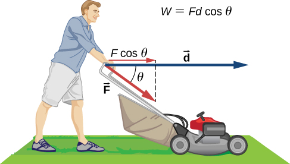
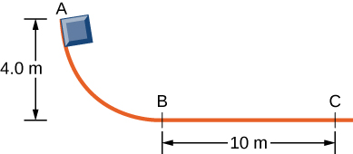
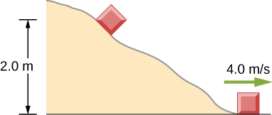

By the end of this section, you will be able to:
We have discussed how to find the work done on a particle by the forces that act on it, but how is that work manifested in the motion of the particle? According to Newton’s second law of motion, the sum of all the forces acting on a particle, or the net force, determines the rate of change in the momentum of the particle, or its motion. Therefore, we should consider the work done by all the forces acting on a particle, or the net work, to see what effect it has on the particle’s motion.
Let’s start by looking at the net work done on a particle as it moves over an infinitesimal displacement, which is the dot product of the net force and the displacement: Newton’s second law tells us that so For the mathematical functions describing the motion of a physical particle, we can rearrange the differentials dt, etc., as algebraic quantities in this expression, that is,
where we substituted the velocity for the time derivative of the displacement and used the commutative property of the dot product [[link]]. Since derivatives and integrals of scalars are probably more familiar to you at this point, we express the dot product in terms of Cartesian coordinates before we integrate between any two points A and B on the particle’s trajectory. This gives us the net work done on the particle:
In the middle step, we used the fact that the square of the velocity is the sum of the squares of its Cartesian components, and in the last step, we used the definition of the particle’s kinetic energy. This important result is called the work-energy theorem ([link]).
The net work done on a particle equals the change in the particle’s kinetic energy:
According to this theorem, when an object slows down, its final kinetic energy is less than its initial kinetic energy, the change in its kinetic energy is negative, and so is the net work done on it. If an object speeds up, the net work done on it is positive. When calculating the net work, you must include all the forces that act on an object. If you leave out any forces that act on an object, or if you include any forces that don’t act on it, you will get a wrong result.
The importance of the work-energy theorem, and the further generalizations to which it leads, is that it makes some types of calculations much simpler to accomplish than they would be by trying to solve Newton’s second law. For example, in Newton’s Laws of Motion, we found the speed of an object sliding down a frictionless plane by solving Newton’s second law for the acceleration and using kinematic equations for constant acceleration, obtaining
where s is the displacement down the plane.
We can also get this result from the work-energy theorem in [link]. Since only two forces are acting on the object-gravity and the normal force-and the normal force doesn't do any work, the net work is just the work done by gravity. The work dW is the dot product of the force of gravity or and the displacement . After taking the dot product and integrating from an initial position to a final position , one finds the net work as
where y is positive up. The work-energy theorem says that this equals the change in kinetic energy:
Using a right triangle, we can see that so the result for the final speed is the same.
What is gained by using the work-energy theorem? The answer is that for a frictionless plane surface, not much. However, Newton’s second law is easy to solve only for this particular case, whereas the work-energy theorem gives the final speed for any shaped frictionless surface. For an arbitrary curved surface, the normal force is not constant, and Newton’s second law may be difficult or impossible to solve analytically. Constant or not, for motion along a surface, the normal force never does any work, because it’s perpendicular to the displacement. A calculation using the work-energy theorem avoids this difficulty and applies to more general situations.
Loop-the-Loop The frictionless track for a toy car includes a loop-the-loop of radius R. How high, measured from the bottom of the loop, must the car be placed to start from rest on the approaching section of track and go all the way around the loop?
Strategy The free-body diagram at the final position of the object is drawn in [link]. The gravitational work is the only work done over the displacement that is not zero. Since the weight points in the same direction as the net vertical displacement, the total work done by the gravitational force is positive. From the work-energy theorem, the starting height determines the speed of the car at the top of the loop,
where the notation is shown in the accompanying figure. At the top of the loop, the normal force and gravity are both down and the acceleration is centripetal, so
The condition for maintaining contact with the track is that there must be some normal force, however slight; that is, . Substituting for and N, we can find the condition for .
Solution Implement the steps in the strategy to arrive at the desired result:
Significance On the surface of the loop, the normal component of gravity and the normal contact force must provide the centripetal acceleration of the car going around the loop. The tangential component of gravity slows down or speeds up the car. A child would find out how high to start the car by trial and error, but now that you know the work-energy theorem, you can predict the minimum height (as well as other more useful results) from physical principles. By using the work-energy theorem, you did not have to solve a differential equation to determine the height.
Check Your Understanding Suppose the radius of the loop-the-loop in [link] is 15 cm and the toy car starts from rest at a height of 45 cm above the bottom. What is its speed at the top of the loop?
Visit Carleton College’s site to see a video of a looping rollercoaster.
In situations where the motion of an object is known, but the values of one or more of the forces acting on it are not known, you may be able to use the work-energy theorem to get some information about the forces. Work depends on the force and the distance over which it acts, so the information is provided via their product.
Determining a Stopping ForceA bullet has a mass of 40 grains (2.60 g) and a muzzle velocity of 1100 ft./s (335 m/s). It can penetrate eight 1-inch pine boards, each with thickness 0.75 inches. What is the average stopping force exerted by the wood, as shown in [link]?
Strategy We can assume that under the general conditions stated, the bullet loses all its kinetic energy penetrating the boards, so the work-energy theorem says its initial kinetic energy is equal to the average stopping force times the distance penetrated. The change in the bullet’s kinetic energy and the net work done stopping it are both negative, so when you write out the work-energy theorem, with the net work equal to the average force times the stopping distance, that’s what you get. The total thickness of eight 1-inch pine boards that the bullet penetrates is
Solution Applying the work-energy theorem, we get
so
Significance We could have used Newton’s second law and kinematics in this example, but the work-energy theorem also supplies an answer to less simple situations. The penetration of a bullet, fired vertically upward into a block of wood, is discussed in one section of Asif Shakur’s recent article [“Bullet-Block Science Video Puzzle.” The Physics Teacher (January 2015) 53(1): 15-16]. If the bullet is fired dead center into the block, it loses all its kinetic energy and penetrates slightly farther than if fired off-center. The reason is that if the bullet hits off-center, it has a little kinetic energy after it stops penetrating, because the block rotates. The work-energy theorem implies that a smaller change in kinetic energy results in a smaller penetration. You will understand more of the physics in this interesting article after you finish reading Angular Momentum.
Learn more about work and energy in this PhET simulation called “the ramp.” Try changing the force pushing the box and the frictional force along the incline. The work and energy plots can be examined to note the total work done and change in kinetic energy of the box.
The person shown below does work on the lawn mower. Under what conditions would the mower gain energy from the person pushing the mower? Under what conditions would it lose energy?
The mower would gain energy if It would lose energy if The mower may also lose energy due to friction with the grass while pushing; however, we are not concerned with that energy loss for this problem.
Work done on a system puts energy into it. Work done by a system removes energy from it. Give an example for each statement.
Two marbles of masses m and 2m are dropped from a height h. Compare their kinetic energies when they reach the ground.
The second marble has twice the kinetic energy of the first because kinetic energy is directly proportional to mass, like the work done by gravity.
Compare the work required to accelerate a car of mass 2000 kg from 30.0 to 40.0 km/h with that required for an acceleration from 50.0 to 60.0 km/h.
Suppose you are jogging at constant velocity. Are you doing any work on the environment and vice versa?
Unless the environment is nearly frictionless, you are doing some positive work on the environment to cancel out the frictional work against you, resulting in zero total work producing a constant velocity.
Two forces act to double the speed of a particle, initially moving with kinetic energy of 1 J. One of the forces does 4 J of work. How much work does the other force do?
(a) Calculate the force needed to bring a 950-kg car to rest from a speed of 90.0 km/h in a distance of 120 m (a fairly typical distance for a non-panic stop). (b) Suppose instead the car hits a concrete abutment at full speed and is brought to a stop in 2.00 m. Calculate the force exerted on the car and compare it with the force found in part (a).
A car’s bumper is designed to withstand a 4.0-km/h (1.1-m/s) collision with an immovable object without damage to the body of the car. The bumper cushions the shock by absorbing the force over a distance. Calculate the magnitude of the average force on a bumper that collapses 0.200 m while bringing a 900-kg car to rest from an initial speed of 1.1 m/s.
2.72 kN
Boxing gloves are padded to lessen the force of a blow. (a) Calculate the force exerted by a boxing glove on an opponent’s face, if the glove and face compress 7.50 cm during a blow in which the 7.00-kg arm and glove are brought to rest from an initial speed of 10.0 m/s. (b) Calculate the force exerted by an identical blow in the days when no gloves were used, and the knuckles and face would compress only 2.00 cm. Assume the change in mass by removing the glove is negligible. (c) Discuss the magnitude of the force with glove on. Does it seem high enough to cause damage even though it is lower than the force with no glove?
Using energy considerations, calculate the average force a 60.0-kg sprinter exerts backward on the track to accelerate from 2.00 to 8.00 m/s in a distance of 25.0 m, if he encounters a headwind that exerts an average force of 30.0 N against him.
102 N
A 5.0-kg box has an acceleration of when it is pulled by a horizontal force across a surface with Find the work done over a distance of 10 cm by (a) the horizontal force, (b) the frictional force, and (c) the net force. (d) What is the change in kinetic energy of the box?
A constant 10-N horizontal force is applied to a 20-kg cart at rest on a level floor. If friction is negligible, what is the speed of the cart when it has been pushed 8.0 m?
2.8 m/s
In the preceding problem, the 10-N force is applied at an angle of below the horizontal. What is the speed of the cart when it has been pushed 8.0 m?
Compare the work required to stop a 100-kg crate sliding at 1.0 m/s and an 8.0-g bullet traveling at 500 m/s.
A wagon with its passenger sits at the top of a hill. The wagon is given a slight push and rolls 100 m down a incline to the bottom of the hill. What is the wagon’s speed when it reaches the end of the incline. Assume that the retarding force of friction is negligible.
An 8.0-g bullet with a speed of 800 m/s is shot into a wooden block and penetrates 20 cm before stopping. What is the average force of the wood on the bullet? Assume the block does not move.
12.8 kN
A 2.0-kg block starts with a speed of 10 m/s at the bottom of a plane inclined at to the horizontal. The coefficient of sliding friction between the block and plane is (a) Use the work-energy principle to determine how far the block slides along the plane before momentarily coming to rest. (b) After stopping, the block slides back down the plane. What is its speed when it reaches the bottom? (Hint: For the round trip, only the force of friction does work on the block.)
When a 3.0-kg block is pushed against a massless spring of force constant the spring is compressed 8.0 cm. The block is released, and it slides 2.0 m (from the point at which it is released) across a horizontal surface before friction stops it. What is the coefficient of kinetic friction between the block and the surface?
0.25
A small block of mass 200 g starts at rest at A, slides to B where its speed is then slides along the horizontal surface a distance 10 m before coming to rest at C. (See below.) (a) What is the work of friction along the curved surface? (b) What is the coefficient of kinetic friction along the horizontal surface?
A small object is placed at the top of an incline that is essentially frictionless. The object slides down the incline onto a rough horizontal surface, where it stops in 5.0 s after traveling 60 m. (a) What is the speed of the object at the bottom of the incline and its acceleration along the horizontal surface? (b) What is the height of the incline?
a. 24 m/s, −4.8 m/s2; b. 29.4 m
When released, a 100-g block slides down the path shown below, reaching the bottom with a speed of 4.0 m/s. How much work does the force of friction do?
A 0.22LR-caliber bullet like that mentioned in [link] is fired into a door made of a single thickness of 1-inch pine boards. How fast would the bullet be traveling after it penetrated through the door?
310 m/s
A sled starts from rest at the top of a snow-covered incline that makes a angle with the horizontal. After sliding 75 m down the slope, its speed is 14 m/s. Use the work-energy theorem to calculate the coefficient of kinetic friction between the runners of the sled and the snowy surface.